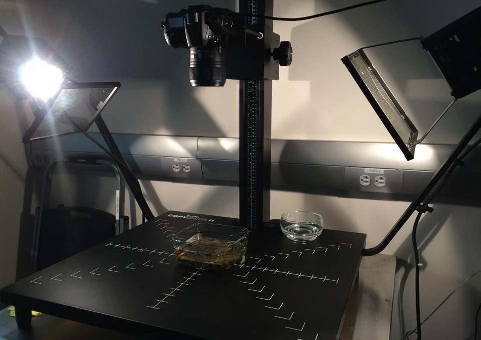
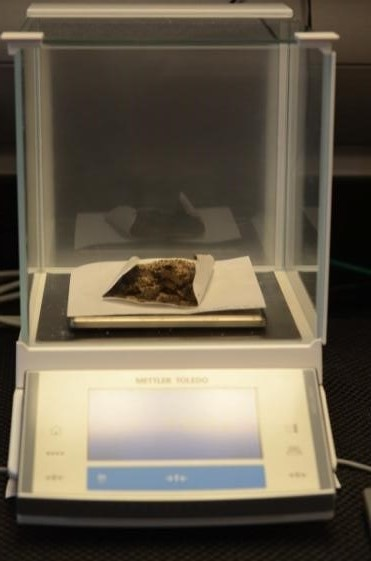
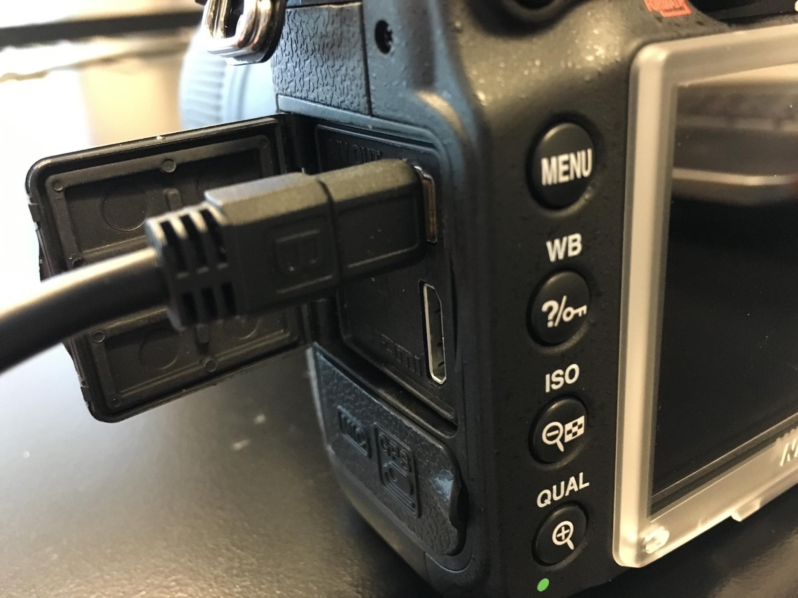
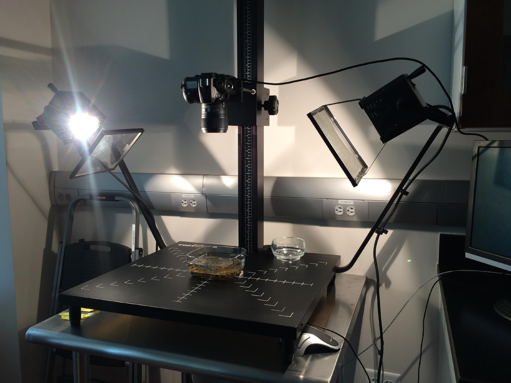
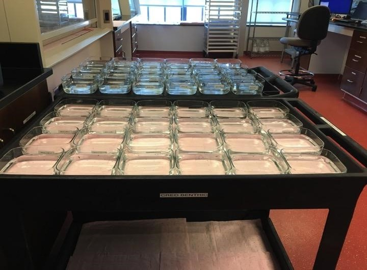
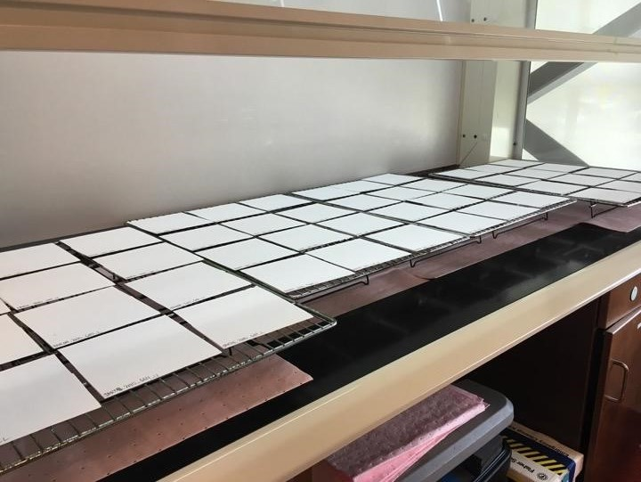
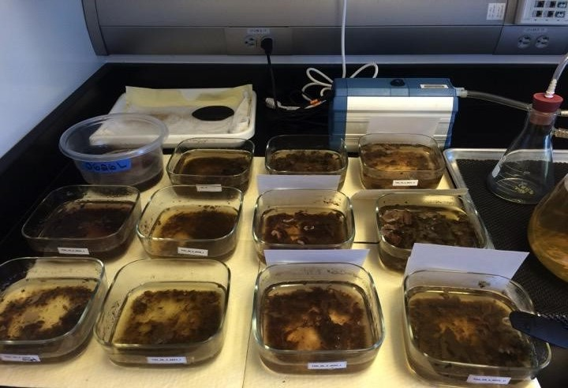
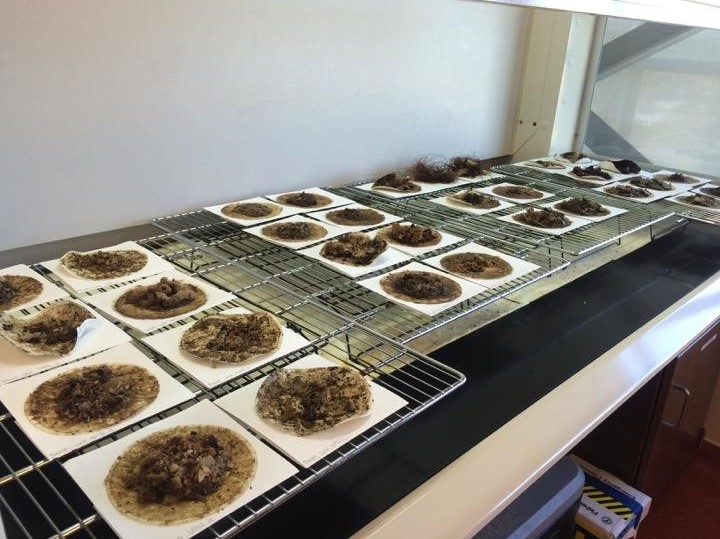

18 Calcification Accretion Unit (CAU)
Authors: Misa PL, Richards CR, Halperin AH, Little AL, and Weible RM (revised March 2020)
18.1 CAU Assembly Schematic
18.1.1 Equipment and Supplies


18.2 CAU Laboratory Sample Processing SOP
18.2.1 Equipment and Supplies
18.2.2 Processing Timeline
Approximately 25 units or 50 CAU plates can be processed as a batch (at ESD-CREP, this is equivalent to CAUs collected from about 1 island). The processing of each batch is typically completed in 4 weeks. Below is an example of a typical processing timeline
18.2.3 Preparation Work
ID Tags
Assign a unique ID to both plates of each Calcification Accretion Unit (CAU) using the CAU Plate ID naming convention SiteID_RecoveryYear_4-digitSerial#_PlateLocation (“U” - upper plate, “L” - lower plate)
e.g. PAL01_2012_5319_U
PAL01_2012_5319_LUsing a pencil, pre-label the following with the CAU Plate ID (e.g. PAL01_2012_5319_U):
- Paper tray A - blank index card 12.7 x 20.32cm (5” x 8”) folded into 12.7 x 12.7cm (5” x 5”) paper tray
- Paper tray B - same as above
- Filterpaper 11cm diameter, #1, >11μm particle retention (e.g. Whatman No.1001-110)
- Paper tray A - blank index card 12.7 x 20.32cm (5” x 8”) folded into 12.7 x 12.7cm (5” x 5”) paper tray
Insert the corresponding Filter paper into the fold of Paper tray B and store in a container. Place Paper tray A in a separate container. Store both containers away from moisture and direct sunlight. See I. Step 8 for pre-weighing instructions.
Print Glass Dish Labels on waterproof paper using the template below. Attach each label on one side of the glass dish with tape.
Print the Plate Photo ID tags on waterproof paper using the template below.There are 4 tags, one for each surface of the CAU to be photographed:
Upper Plate, Top Side
Upper Plate, Bottom Side
Lower Plate, Top Side
Lower Plate, Bottom SideAn example of a plate photo ID: PAL01_2012_5319_U_T
Using an analytical balance, pre-weigh the following and record the value (up to 3 decimal points) in the ESD Apex CAU Mission App (or the CAU Data Entry tool for ESD-CREP users, see Section VI p. 20):
- Paper tray A - record the value in Column (‘Paper Tray A Weight [g]’)
- Paper tray B + Filterpaper - record the value in Column (‘Filter & Paper Tray B Dry Weight [g]’)
- Paper tray A - record the value in Column (‘Paper Tray A Weight [g]’)
Re-sealable Bag ID
Pre-label re-sealable plastic bags 0.95L (1 quart) with the CAU Plate ID. The filter residue will be stored in this bag for archiving
Database
Using the ESD Apex CAU Mission App (or the CAU Data Entry tool for ESD-CREP users, see Section VI p. 20), have the Data Management team enter the CAU Site IDs (e.g. PAL01) and 4-digit CAU Serial #s (e.g. 5319) for each unit to be processed
To calculate the “Soak Time” of each unit, record the CAU “Deployment Date” and “Recovery Date” in Column CA and CB, respectively. Record any other additional field data in the spreadsheet (e.g. coordinates, depth, comments, etc.). When using the ESD Apex CAU Mission App, soak time is calculated automatically.
Pre-heat Drying Oven
Oven (Heratherm OGS-180) settings:
Temperature: 70°C (140°F)
Damper: level 3 (mid-high) Prepare 5% HCl acid solution in 2-liter bottles
One batch (20-30 units) of CAUs will require about 10-15, 2-liter bottles of 5% HCl acid solution in order to completely dissolve calcified materials. More may be needed depending on the amount of accreted CaCO3.
To dilute full-strength HCl acid (1.18 g/mL, 36.5 molar mass, 37% conc.) into 5% solution, use the recommended ratio below:
2L stock: 225 ml HCl
1775 ml deionized/distilled H2O
1L stock: 112.5 ml HCl
887.5 ml deionized/distilled H2O ** Be sure to ADD ACID TO WATER to avoid excessive heating, violent boiling or splashing of concentrated acid that could result from the exothermic reaction. “Do as you oughta, add acid to water!” - Dr. Anne Cohen, WHOI
** Acid solutions with a higher (>5% HCl concentration) may be prepared and used if desired for processing CAUs from heavily calcified regions (American Samoa, PRIAs), however concentrations greater than or equal to 15% HCl require special PPE including fume hood utilization.
18.2.4 CAU Processing Steps
see Section IV, p.11 for sample processing timeline and Section VII.A, p.36 for sample daily task guide
18.2.4.1 Dissassembling and Photo-documentation
Thaw a batch of CAUs (typically 20-30 units) in the sink for at least 12 hours. Do not thaw over water.
Disassemble the plates of each CAU by removing the hex nuts and washers using two 1/4" wrenches (one to hold the unit steady). Make sure to maintain plate identity (upper vs lower plate, top vs bottom side of plate) and the CAU Plate ID.
Carefully rinse each plate in a saltwater rinse basin (if saltwater is not readily available, freshwater may be used) to remove loose sediment, sand and mobile fauna. Discard any mobile fauna that may have fallen off during rinsing.
Fill each pre-labeled glass dish with saltwater(or freshwater).
Place each CAU plate with the top plate facing upwards into its corresponding glass dish. Ensure that the plate and any encrusting fauna are completely submerged in water. Add more water if necessary (see Section V.C for additional instructions)
- Attach a DSLR camera to a camera copy stand or a tripod. Arrange lighting such that the plate is fully illuminated and no glare is visible to the camera
** If using a Nikon D7000 camera mounted on a copy stand kit with attached lights, see Section V, p. 12 for tethering protocol and recommended settings (f/8, ISO400, AWB).

- It is recommended to tether the camera to a computer and save the photos directly to the computer’s local drive (while using the camera’s SD card as a backup drive). Designate a folder where the CAU photoset will be stored directly.
** May 2019 - ESD General (T:) Drive Organized by Year and Cruise Mission, or Island Code for shore-based missions or those from the Atlantict:
T:\Oceanography\CAUs\Analysis - Photograph the top and bottom of each plate, first with the Plate Photo ID tag and then a 2nd image without the tag. (If pieces of calcified material fall off during the photographing process, retain the pieces with the plate to be used during the decalcification process).
From the designated CAU photoset folder, confirm that both plate photos (with and without the Plate Photo ID tag) are in focus. After photographing both sides of each plate, each CAU photoset folder should have 8 photos. The photos should be later on renamed with the following naming convention:
a. With Plate Photo ID tag: SiteID_RecoveryYear_4-digitSerial#_PlateLocation (“U” - upper plate or “L” - lower plate)_PlateSurface (“T” - top plate or “B” - bottom plate)_ID.jpg
b. Without Plate Photo ID tag:
SiteID_RecoveryYear_4-digitSerial#_PlateLocation (“U” - upper plate, “L” lower plate)_PlateSurface (“T” - top plate, “B” - bottom plate).jpgExample:
PAL01_2012_5319_U_T_ID.jpg – Upper Plate, Top Side with tag
PAL01_2012_5319_U_T.jpg – Upper Plate, Top Side
PAL01_2012_5319_U_B_ID.jpg – Upper Plate, Bottom Side with tag
PAL01_2012_5319_U_B.jpg – Upper Plate, Bottom Side
PAL01_2012_5319_L_T_ID.jpg – Lower Plate, Top Side with tag
PAL01_2012_5319_L_T.jpg – Lower Plate, Top Side
PAL01_2012_5319_L_B_ID.jpg – Lower Plate, Bottom Side with tag
PAL01_2012_5319_L_B.jpg – Lower Plate, Bottom SideAfter photographing all units, if the CAUs were submerged in seawater, carefully rinse each plate in freshwater. If the CAUs were submerged in freshwater, skip the rinsing process.
Be sure to remove all hex nuts and washers that may still be attached at the center of the plate. Hex nuts and washers can be covered by calcified material and difficult to see. Inspect each side of each plate to ensure that there are no washers or hex nuts present. If a hex nut or washer is covered in calcified material, remove the hardware and chip off the calcified material from the hardware. Retain the removed material with the rest of the plate.
Place each plate and any dislodged pieces of calcified material on its corresponding Paper Tray A, then onto a drying rack and placed in the fume hood. The drying rack can be left in a fume hood to air dry at room temperature indefinitely (minimum of 24 hours), until they are dried in the oven.
** Drying at room temperature before placing in the oven can help reduce the time the plates remain in the oven.
** Wash and rinse the glass dishes but keep the labels on. The same glass dishes will be used during the HCl acid decalcification process.
18.2.4.2 Determining the weight of the CAU plate
After a minimum air-drying period of 24 hours, place the plate assembly (plate, dislodged pieces of calcified material and Paper Tray A) in the oven labeled “Non-HCl” to dry at 60°C for 24 hours.
** Check that the internal temperature remains consistent. If not, minor adjustments should be made to the oven temperature and damper settings.
After 24 hours, remove the plate assembly and allow it to come to room temperature (roughly 10 min).
Weigh the entire plate assembly.
In the ESD Apex CAU Mission App (or CAU Data Entry tool for ESD-CREP users), record the weight to at least 3 decimal places under the column ‘Drying 1 [24 h] [paper tray + CAU plate] [g]’.
Return the plate assembly in the oven.
Dry the CAU plates for another 24 hours.
Remove the plate assembly and allow it to come to room temperature (roughly 10 min).
Weigh the entire plate assembly.
In the ESD Apex CAU Mission App (or CAU Data Entry tool for ESD-CREP users), record the 2nd weight to at least 3 decimal places under the column ‘Drying 2 [48 h] [paper tray + CAU plate] [g]’.
Compare the current weight from the previous weight:
If the difference in weight is less than 0.1g, the plates are considered dry and no further drying needs to occur. This is automatically calculated by the ESD Apex CAU Mission App and denoted by the ‘Plate Dry’ column on the far right saying ‘YES’.
If the difference in weight is greater than 0.1 g, return the plates to the oven for another 24 hours.
Repeat III.B Steps 5-10 until the difference in weight is less than 0.1 g.
18.2.4.3 Decalcification of CaCO3 in Hydrochloric Acid
Be sure to wear proper PPE when handling acid contaminated objects (steps 1-9) including gloves, safety glasses, and lab coat.
Ensure that the plate is fully dry (mass lost between last two weighing will have been less than 0.1g) and the weight of the plate assembly and Paper Tray A has been recorded.
Place the individual plates in the pre-labeled glass dishes. Keep Paper Tray A and place under the glass dish.
Chip off large pieces of calcified materials (e.g. CCA, coral, shells, etc.) and grind using a mortar and pestle. Return the pulverized forms in the glass dish.
Fill the glass dish midway with 5% HCl (or otherwise chosen concentration) acid solution or until the entire CAU plate is fully submerged in acid. Add HCl acid slowly as the solution may overflow when bubble formation/decalcification begins. The overflow most definitely occurs when dissolving plates from Rose and Swains Atoll.
When decalcification has slowed (12-24 hours):
Scrape leftover material from the CAU plates with a razor blade into the glass dish. (See III.C, Step 8-15).
Grind pieces of calcified materials that may still be present and return in the glass dish.
Using acid-resistant gloves, sort through the scraped fleshy material in the glass dish and feel for any calcified materials.
Some calcified material can be completely covered by a boundary layer of fleshy material. If present, manually tease the fleshy material and grind the calcified material to allow decalcification to continue.
If there are more calcified materials in the dish, but no obvious decalcification occurring (no bubble formation), decant the used acid solution and drain the fleshy material into another pre-labeled containers (beakers, glass dish, etc). Add new 5% HCl acid solution (*or desired concentration) in the first glass dish to continue dissolving the remaining calcified materials.
Repeat III.C, Steps 5b)-e) until all CaCO3 is fully dissolved. Additional 5% HCl acid solution (*or desired concentration) may need to be added 2-4x, depending on the amount of CaCO3 present.
Using 5% HCl acid (*or desired concentration) in a squeeze bottle, thoroughly rinse the tools (gloves, mortar and pestle, razor/scraper) into the glass dish.
When the CAU PVC plates have been scraped clean (fleshy/calcified material completely removed from either side and edges of the plate), rinse all sides of the plates with 5% acid (*or desired concentration) into the glass dish.
Have a bowl of freshwater ready to scrub and rinse the CAU PVC plates once they are completely clear of particles from the previous step. Pat to dry.
Place the CAU PVC plate on its corresponding Paper Tray A.
Place the rinsed CAU PVC plates in the oven at 60°C for 24 hours on top of the corresponding Paper Tray A.
Remove the plate from the oven and allow to come to room temperature (roughly 10 min).
Weigh the clean and dry CAU PVC plate without the underlying paper tray. - *Paper Tray A can be discarded after the CAU PVC plates have been weighed and recorded.
In the ESD Apex CAU Mission App, record the weight to at least 3 decimal places under the column ‘CAU PVC Dry Weight [g]’.
Collect the clean and weighed CAU PVCs and store for redeployment/archiving.
18.2.4.4 Vacuum filtration of fleshy material
Be sure to wear proper PPE when handling acid contaminated objects (steps 1-4) including gloves, safety glasses, and lab coat.
Using a 4-liter Buchner funnel, a plastic mesh layer (with attached pull string) and the corresponding pre-weighed filter paper, vacuum filter the acid bath and remaining fleshy material for each CAU plate. Use a freshwater squeeze bottle to rinse contents of the glass dish into the funnel.
If the volume of fleshy material is sufficient to clog the filter paper, a 2nd pre-labeled and pre-weighed filter paper (see III.D, Step 2, a-c) can be used to filter the remaining volume of acid bath and fleshy material:
Label an additional filter paper and paper tray with its corresponding CAU Plate ID (e.g. PAL01_2012_5319_U).
In the ESD Apex CAU Mission App, record the weight of the 2nd filter paper + paper tray to at least 3 decimal places in the column ‘Addtl Filter & Paper tray B Dry Weight [g]’.
If filtering has slowed down, use a spatula/teaspoon to gently scrape the surface of the filter paper to allow more solution to filter through. Filtering can take >5 mins depending the amount of fleshy material in the acid bath.
- When filtration is completed, place the filter paper on its corresponding Paper Tray B and onto a drying rack. The drying rack should be left in a fume hood to air dry at room temperature (minimum of 24 hours). The filter paper can continue to air dry at room temperature, indefinitely, until they are dried in the oven.
18.2.4.5 Determining the weight of the fleshy material
Be sure to wear proper PPE (gloves) when handling acid contaminated filters in this section.
- After a minimum air-drying period of 24 hours, place the filter paper assembly (filter paper and Paper Tray B) in the oven to dry at 60°C for 24 hours.
** Check that the internal temperature remains consistent. If not, minor adjustments should be made to the oven temperature and damper settings.
After 24 hours, remove the filterpaper assembly and allow it to come to room temperature (roughly 10min).
Weigh the entire filterpaper assembly.

In the ESD Apex CAU Mission App, record the weight to at least 3 decimal places under “Filters” >‘Drying 1 [24 h] [paper tray + filterpaper] [g]’.
Return the filterpaper assembly to the oven.
Dry the filterpaper for another 24 hours.
Remove the filterpaper assembly and allow it to come to room temperature (roughly 10min).
Weigh the entire filterpaper assembly
In the ESD Apex CAU Mission App, record the weight to at least 3 decimal places under “Filters” >‘Drying 2 [48 h] [paper tray + filterpaper] [g]’.
Compare the current weight from the previous weight:
- If the difference in weight is less than 0.1g, the plates are considered dry and no further drying/weighing needs to occur.
- If the difference in weight is greater than 0.1 g, return the plates to the oven for another 24 hours.
- If the difference in weight is less than 0.1g, the plates are considered dry and no further drying/weighing needs to occur.
** In the ESD Apex CAU Mission App, the column to the far right called “Filter Dry” has been formatted to change from ‘NO’ to “YES” if the difference in weight is less than 0.1g.
Repeat III.E Steps 5-10 until the difference in weight is less than 0.1 g.
After recording the final filterpaper assembly dry weight, place the filterpaper and Paper tray B in its corresponding re-sealable bag for archiving. Ensure the bag is labeled properly using the CAU Plate ID naming convention:
*SiteID_RecoveryYear_4-digitSerial#_PlateLocation (“U” - upper plate, “L” - lower plate)*
18.3 Camera Tethering and CAU Plate Photo-Documentation (Nikon Camera Control Pro 2)
Refer to the brand/model user documentation/manual if using a different camera and setup
18.3.1 Installing the Software
For ESD-CREP users, the installation instructions and software product key can be accessed in the network folder
T:\general\ProjectGroup\Ocean Acidification\CAUs\Analysis\CAU Processing SOP, Data sheet, Labels\CAU SOPs 2015\CAUSOP_NikonD7000Settings.pdf18.3.2 Connecting the camera to the computer
- Connect Nikon DSLR camera (Nikon D7000 with AF-S Micro NIKKOR 60mm f2.8G ED lens) to the computer via USB mini cable

Start the Nikon Camera Control Pro 2 application
Turn the camera ON
Once connected, the connection status of the camera in use will be displayed on the Camera Control Pro window

If using the software for the FIRST TIME:
Click on “Exposure 1” under the Camera Control tabs and change the settings of the following:
Shutter speed: 1/50 sec
Aperture: f/8
b. Click on “**Exposure 2**” under the Camera Control tabs and change the settings of the following:
ISO Sensitivity: **ISO 400**
White Balance: Auto
Option: Normalc. Click on “**Storage**” under the Camera Control tabs and change the settings of the following:
Image Quality: JPEG fine
JPEG Compression: Optimal quality
Image size: Large (4928x3264)
Record to: PC
Card Record Mode: Backupd. Click on “**Image Processing**” under the Camera Control tabs and change the settings of the following:
Picture Control: Standard
High ISO NR: On (High)** Note: the above settings need to be set each time the software is reinstalled and the above settings will need to be modified if a new camera model/lens are used
18.3.3 CAU plate photo-documentation
- Ensure that the camera’s Mode dial is set to “M” (Manual)
- Ensure that the camera lens’ A-M switch is set to “M-A” (Autofocus w/ manual override).
- Connect the Nikon DSLR camera to the copier stand, then connect the camera to the computer via mini USB cable

Start the Nikon Camera Control Pro 2 application
Turn the camera ON
Once connected, the connection status of the camera in use will be displayed on the Camera Control Pro main window

- Go to the Tools menu to display the Transfer Options window

Click the Browse button next to the “Destination folder”. For ESD-CREP users, navigate to the appropriate CAU site and unit folder location
ex: DocumentsAnalysisANALYSIS_368
where the images will be downloaded as they are taken. Click OK

- On the Camera Control Pro main window, click on the “LV” button at the bottom-right corner to display the Live View window.
** Note: the camera controls and folder location options cannot be modified while the Live View window is displayed
- Center the glass dish with the plate under the camera and using the Live View display, ensure that all corners of the plate are visible in the frame
** Note: both copier stand lights should be switched on at this time and that any external light sources are minimized (i.e., window shades are drawn, overhead/ceiling lights are switched off)
- Using the “AF and Shoot” button on the Live View window, photograph the top of the plate, first with the Plate Photo ID tag and then a second image without the tag
Flip the plate and photograph the bottom of the plate, again with Plate Photo ID tag and then a second image without the tag
From the designated CAU unit folder, confirm that both plate photos (with and without the Plate Photo ID tag) are in focus
Repeat for the next set of plates/surfaces for each unit
After all 8 images have been taken and saved to the unit folder (e.g. SWA03_368), click on the “LV” button at the bottom-right corner to turn off Live View
On the Camera Control Pro main window, go to the Tools menu to display the Transfer Options window. Click on the Browse button next to the “Destination folder” and navigate to the next CAU site and unit folder (e.g. SWA03_394). Repeat steps C. 7-13
At the end of the plate photo documentation session, ensure that all CAU plate photos have been taken and saved to their appropriate local drive folders
Backup the images by copying the Island parent folder,
ex: Documents/CAU Analysis/ASRAMP 2015/HOTO ANALYSIS/SAMOA/SWAINS
to the network drive,
ex: T:\2018_CAU AnalysisANALYSIS
and to the external hard drive. If prompted, select “Overwrite”
Turn off the camera and disconnect it from the mini USB cable. On the Camera Control Pro main window, select Exit from the File menu
Rename all plate photos with the following naming convention:
With Plate Photo ID tag:
SiteID_RecoveryYear_4-digitSerial#_PlateLocation (“U” - upper plate or “L” - lower plate)_PlateSurface (“T” - top plate or “B” - bottom plate)_ID.jpgWithout Plate Photo ID tag:
SiteID_RecoveryYear_4-digitSerial#_PlateLocation (“U” - upper plate, “L” - lower plate)_PlateSurface (“T” - top plate, “B” - bottom plate).jpg
Example:
PAL01_2012_5319_U_T_ID.jpg – Upper Plate, Top Side with tag
PAL01_2012_5319_U_T.jpg – Upper Plate, Top Side
PAL01_2012_5319_U_B_ID.jpg – Upper Plate, Bottom Side with tag
PAL01_2012_5319_U_B.jpg – Upper Plate, Bottom Side
PAL01_2012_5319_L_T_ID.jpg – Lower Plate, Top Side with tag
PAL01_2012_5319_L_T.jpg – Lower Plate, Top Side
PAL01_2012_5319_L_B_ID.jpg – Lower Plate, Bottom Side with tag
PAL01_2012_5319_L_B.jpg – Lower Plate, Bottom Side
Copy the newly-renamed images to the network folder by copying the Island parent folder
e.g. Documents/CAU Analysis/ASRAMP 2015/PHOTO ANALYSIS/SAMOA/SWAINS
to the network drive
e.g. T:\2018_CAU AnalysisANALYSIS
and to the external hard drive. If prompted, select “Overwrite”
18.4 CAU Data Entry Tool User Documentation
for ESD-CREP use only Last modified by David Igeta on 12/15/2015
18.4.1 Application Overview
Summary: This web application was created using Oracle Application Express (APEX) 5.0 in order facilitate the process of recording the Calcification Accretion Unit (CAU) weights into a database. In order to request access to the application, please contact ITS or the Data Management department for assistance.
Interface: The web application is categorized in to four main sections:
- Home
- Data Entry
- Data Summary
- Audit
18.4.1.1 Home
This page breaks down the number of CAUs that still need to be weighed by Plate, Site, and Island. The Valid Plate, Valid Filter, and Filter Subplate fields are explained in another section.
18.4.1.2 Data Entry
The Data Entry section is where you will go to enter all the weights that you will find. This table shows all the data that has been entered. Editing the plate weights and filter weights are actually recorded in separate pages by clicking on items 6 and 7. Below is an image of what you’ll see when you navigate to the Data Entry page.
a. **Breadcrumb Bar** – use this to navigate through the different levels of the application
b. **Finder Drop Down** – use this to select the column you wish to search by
c. **Search Field** – enter search criteria here
d. **Search Button** – click this button to execute your search criteria or hit ‘Enter’
e. **Row Selecto**r – choose the number of rows you wish to display on the page
f. **Action** – Allows you to download the table, and perform more advanced functions
g. **Edit Plate Weights** – Navigates to a new page where data for the CAU plates are entered
h. **Edit Filter Weights** – Navigates to a new page where data for the CAU filters are entered Edit Plate Weights Page
The Edit Plate and Edit Filter pages are identical; however, we are going to work with the Edit Plate page below. Click on the Edit Plate Weights button (shown in figure 2) to navigate to the screen below:
a. Filter By Island – Drop down list of islands shown in table
b. Rows to Display – Select number of rows to display
c. Select drying cycle
Select the name of the column you wish to edit. Each item in the drop down menu corresponds to a column in the table. Once you’ve selected the cycle, click Apply Filters to begin inputting data into that column
d. Note how only one column can be edited at a time. This application was designed to be used with software that inputs data directly from a scale which uses a tab delimiter
e. Apply Filters – must be clicked each time a change is made on items 1 through 3
f. Edit Filter Weights - Navigates to a new page where CAU filter weight data is inputted g. Save – allows you to submit your changes and displays the number of records that have been updated
h. Calculate – Filters any records that have been completed from the table. Once filtered, these CAU plates will be used in the calcification rates calculations. The following criteria must be met before a record is filtered from the Edit Plate Weights and Edit Filter Weights pages:Edit Plate Weights
The Plate_Dry column says YES (This value determines whether a plate is dry)
The Paper_Tray_Weight is NOT empty (Entering ‘0’ will suffice)
The CAU_Pvc_Dry_Weight is NOT empty (Entering ‘0’ will suffice)
Edit Filter Weights
The Filter_Dry column says YES (This value determines whether a filter is dry)
The Filter_Paper_Tray_Dry_Weight is NOT blank (Entering ‘0’ will suffice)
If you notice that a record is not being filtered from the table by clicking on the Calculate button, ensure the three criteria mentioned above are being met.
Note: CAU plates will NOT be accounted for in the final calculations until they have been filtered from this page using the Calculate button.
Unlike the Save button, this button will not display how many records have been filtered from the screen.
Edit Filter Weights Page
If you click on the Edit Filter Weights button (see figure 3), it will take you to a screen identical to the Edit Plate Weights page. The difference here is the type of columns it shows and an Overflow button.
Overflow Page Overview
Clicking on the Overflow button will bring you to a separate page that displays any subplates that have been created whether they have been dried or not. The Overflow page is used to add additional filters (subplates) in the event a filter is too small or heavy for the scale. Explaining how to add, edit, and delete a subplate is explained in another user guide.
Plate/Filter Dry Column
You will see a column called, Plate Dry or Filter Dry in some tables. This column automatically updates each time you save your changes.
In a nutshell, the column will take the difference between the previous weight and the current weight. If the difference is outside of the range – 1 g to 0.1 g then the column will say NO if the plate is not dry and YES if it is dry.
** Note: There are times when a plate or filter will actually get heavier between drying cycles due to the moisture in the air; however, a plate/filter is considered dry if it gains no more than 0.1 grams.
Comments Column
This column can be modified by selecting the drying cycle to Comments. The comments field allows you to record information about a particular record in the database. Once you make your changes, be sure to click the Save button.
** Note: The ‘Edit Plate Weights’ and ‘Edit Filter Weights’ are two tables that separates the table shown in the ‘Data Entry’ screen due to the number of columns it has. However, even though it may seem that each page has its own Comments field, both pages actually shares that field
Valid Plate/Filter Codes
There are three main codes associated with these columns:
- N = record is not dry
- Y = record is dry and will be included in the calculation if both the upper and lower plates are ‘Y’ or ‘F’
- F = record was force-dried and will be included in the calculation if the upper and lower plates are ‘Y’ or ‘F’
- B = record is considered bad and is not included in the end calculations
** Note: In order to modify the valid plate/filter columns, you will need update access to the CAU_ANALYSIS table inside Oracle SQL Developer. As long as these two fields have a value of either ‘Y’ or ‘F’, the record will be included in the end calculations
18.4.1.3 Data summary
This section allows you to view the calcification rates by unit, site, or island. You can also export the information to either an HTML or CSV file by clicking the Download option shown below. Tools built-in to the interactive reports can be used to filter the data and create tables for graphical analysis.
Each report has the same options to choose from in the Actions drop-down menu. If you need more information about what a particular feature does, click on the Help option.
The Data Summary page is where you will see the following calculations:
- Net Weight
- Final Material Dry Weight
- Final Fleshy Weight
- Calcification Rate By Plate
There are three additional report pages:
- Calcification Rate By Unit (shows calculation by grouping the upper and lower plates together) * Calcification Rate By Site (shows calculation by grouping the sites together)
- Calcification Rate By Island (shows calculation by grouping the islands together)
Generating Reports with Calcification Rate By Island
This page displays the calcification rates by island and includes a bar graph to help depict the number values. You can filter the report by region name, year, and island as you wish. Once you’ve made your selections, click on the Generate Report button to update the graph and table.
** Note: The table is a graphical depiction of what is shown in the table below and vice versa
18.4.1.4 Audit
This page is a read-only summary of what is shown in the Data Entry Summary page with a few additional columns.
For each column that can be edited by a user, there are two additional columns that correspond to it: Last Mod By (shows who last modified column) and Last Mod DTM (date, time, month, a record was modified).
For example, in the figure shown below, you see the Paper Tray Weight column next to two other fields before the Filter Paper Tray Dry Weight is shown.
18.4.2 Data Entry Tutorial
In this tutorial, we will be adding plate weights into our application. A similar process would apply to the filter weights.
Click on the Data Entry icon
Next, click on the Edit Plate Weights button
Let’s say we wish to record the first drying cycle weight for a plate in Baker: and show 25 results per page:
- Filter By Island – Select Baker
- Rows to Display – Select 25
- Select Drying Cycle – Weight Plate Drying 1
Once you have made your changes, click on the Apply Filters button to see them take effect
Click inside the text box to input the new weight using the button on the scale. You should automatically see the weight get entered into the cell and the cursor will jump down to the next record. Repeat until you’ve entered all weights for the first drying cycle. Make sure to hit Save once you are done and change the drying cycle to Weight Plate Drying 2 to begin the next cycle when ready.
After you click on Save, a green dialog box will tell you how many rows have been updated with new values as shown in the next figure.
- Once you see a record in the Plate/Filter Dry column display YES in red, this means the plate/filter is dry.
** Note: The ‘Calculate’ button will not filter a record until a value is entered into the ‘Paper Tray Weight’ and ‘CAU PVC Dry Weight’ fields.
Once BOTH the upper and lower plates of a CAU unit have been dried and removed from this table, the unit will get calculated into the final calcification rates which can be seen in the Data Summary section. If a lower or upper plate in a CAU unit is missing, then the entire CAU unit will NOT be included in the end calculations.
- You can move freely between entering weights for the filters and plates by clicking on the button shown below:
18.4.3 Filter Overflow Tutorial
Summary: There will be times when an additional filter is needed in the event a single filter is not large enough to contain the accumulated calcification. In this case, another plate record or “subplate” must be created in order to keep track of the drying cycle weights for each filter.
- The Overflow page can only be reached from the Edit Filter Weights page. Therefore, navigate to Data Entry > Edit Filter Weights > Overflow:
** Note: If you’re currently entering data in the Edit Filter Weights page, ensure you save your changes before clicking on the Overflow button.
- The Overflow page will only allow you to view and add subplates, not edit them. In order to add a subplate, choose the Island, Site, and Cau Serial Plate ID, you wish to add from the drop down arrow shown below.
- The Cau Serial Plate ID drop-down menu will only appear once you have selected a Site. You can click the Reset Filters button to clear your current selections anytime.
- Once you have selected a Cau Serial Plate ID, the Add Subplate button will appear. Once you’re satisfied with your selection, click the Add Subplate button to add the plate into the database
** NOTE: The Cau Serial Plate ID drop-down list will only show non-dry filters currently in the application.
- You will see your new subplate in the table shown below. To edit the subplate, navigate back to the Edit Filter Weights page from the breadcrumb bar at the top of the page.
- Notice how there are now two of the same Cau Serial Plate IDs in the Edit Filter Weights page. The way to distinguish them is by the CAU Analysis ID; this will always be unique. Once created, the subplate is just like any other plate. Add the weight of the additional filter to the Filter Paper Tray Dry Weight column.
Deleting a Subplate
Navigate back to the Overflow page. If you added a subplate by mistake, click on the pencil icon next to the record you wish to delete in the Overflow page.
** Note: The original plate will always have a lower CAU Analysis ID than its subplates.
A window will appear that allows you to view the information before you delete it. If you’re certain you want to remove the record, click the Delete button. If not, click Cancel or exit out of the window.
A window prompt should appear asking if you’re certain of your decision. Click Ok.
If successful, you should see a green dialog box appear in the top-right corner.
18.5 Daily Task Guide
18.5.1 Sample Processing Schedule
18.5.2 Sample Processing Daily Tasks
18.5.2.1 WEEK 1
Monday - Tuesday, Week 1
- Fold, label and weigh paper trays and filter papers.
- Print glass dish labels and plate photo labels.
- Label quart-sized resealable plastic bags.
- Dilute acid to 5% and restock as needed.
Wednesday, Week 1
- Prepare glass dishes for each CAU plate.
- Attach glass dish labels to each glass dish using regular clear tape.

- Arrange glass dishes between two carts in alphabetical order (island, site, serial # and plate) and fill the dishes with freshwater/seawater.

- Arrange oven wire mesh shelves in the fume hood elevated by a drying rack; arrange paper trays on the wire mesh shelves in alphabetical order.

- Place CAUs in the lab sink and thaw overnight.
Thursday, Week 1
- Disassemble CAUs (orient each plate on the dish with the top surface facing up).
- Photograph each plate surface on the copy stand (with and without the plate photo ID tags; see SOPs).
- If using seawater, rinse plate with freshwater and place each plate on their corresponding paper trays in the fume hood.
- Air dry overnight.
- Rinse glass dishes (do not remove dish labels) and dry on the cart.
Friday PM, Week 1
- Place wire mesh shelves with plates in the rolling rack.
- Arrange the shelves between the two drying ovens (pre-set to 75C with damper settings at level 3 to achieve a uniform 60C internal temp).
** For the initial drying, CAU plates are best dried continuously over the weekend
18.5.2.2 WEEK 2
Monday, Week 2
- Pull plates from the oven at 8:00 AM and cool to room temperature in the fume hood for 15-30 minutes.
- Weigh each plate (with the paper tray) and enter into data spreadsheet or the CAU Data Entry tool.
- Return CAUs to the oven.
Tuesday, Week 2
- Repeat Monday’s tasks.
- Take note of the average difference in weight of all plates.
- For ESD-CREP users, if a majority of the upper plates are almost dry (weight difference of 0.2 -0.5), coordinate with NIST representatives to schedule CCA subsampling for the following day when applicable
- Line up upper plate glass dishes on the bench top in alphabetical order; arrange lower plate glass dishes in the right fume hood.
Wednesday, Week 2
- Pull plates from the oven and weigh
- If majority of the upper plates are NOT dry, return all upper plates to oven.
- If all upper plates ARE dry, place each plate (with paper tray) inside its corresponding glass dish on the bench top.
- For ESD-CREP users, if applicable, call/email NIST representatives to confirm that subsampling can occur today
- If majority of the lower plates ARE dry, place each plate in their respective glass dish in the fume hood, place paper tray under each dish. Return the rest of the non-dry lower plates to the oven.
- Start decalcifiying the dry plates: slowly pour 5% HCl acid in each dish and allow the plate to sit in acid for 12-24 hours.
- Optional: if the plates have a good amount of calcified material, pry the calcified material off and pulverize with a mortar and pestle prior to pouring HCl acid in the dish
Thursday, Week 2
- Pull the remaining plates from the oven and weigh.
- Place the remaining CAUs into their respective dishes and pour 5% HCl acid on each and allow to sit in acid for 12-24 hours.
- For plates that have already been soaked in acid for 12-24 hours, scrape the accreted materials from the PVC plates using a scraper.
- Place the clean PVC plates on their corresponding paper trays and air dry on a baking tray.
- For dishes that have large pieces of calcified materials (CCA/coral), pulverize these pieces using a mortar and pestle or a blender.
Friday, Week 2
- Find dishes that still have PVC plates and scrape off accreted materials.
- Find dishes that still have large pieces of calcified materials and pulverize pieces via mortar and pestle or blender.
- If some dishes still contain calcified materials that have settled, decant acid solution into a pre-labeled (serial number and plate identity, e.g. “650_U” is sufficient) plastic container and pour more 5% HCl acid into the glass dish.
- Make sure that all dishes have “new” acid in them before the end of the day.
18.5.2.3 WEEK 3
Monday - Friday, Week 3
- Check for solid calcified materials in each dish.
- Repeat tasks from Week 2, Friday.
- Arrange wire mesh shelves in one of the fume hoods/bench top.
- Set aside the dishes that have completely decalcified materials next to the Filtration station.

- Find the corresponding paper tray+filterpaper and place next to dishes that are ready for filtration.
- Filter.
- Place the solid residue+filterpaper on their corresponding paper trays and on to the wire mesh shelves.

- Ensure that the wire mesh shelves are left in the fume hood/s over the weekend to prevent the filterpapers from absorbing too much moisture.
18.5.2.4 WEEK 4
Monday, Week 4
- Place wire mesh shelves with filterpapers+paper tray in the rolling rack
- Arrange the shelves between the two drying ovens (pre-set to 75C with damper settings at level 3 to achieve a uniform 60C internal temp).
- Label and rinse each PVC plate; discard the paper trays.
- Pat the PVC plates dry, arrange on wire mesh shelves and place in the oven to dry for 24 hours.
Tuesday, Week 4
- Pull filterpapers from the oven at 8:00AM and cool to room temperature in the fume hood for 15-30mins.
- Weigh each filterpaper (with the paper tray) and enter into data spreadsheet or the CAU Data Entry tool.
- Return filterpapers to the oven.
- Pull PVC plates from the oven, cool to room temperature for 15-30 mins, weigh and enter reading to data spreadsheet.
- Bind PVC plates with painter’s tape and store in action packers to be reused.
Wednesday-Friday, Week 4
- Pull filterpapers from the oven at 8:00AM and cool to room temperature for 1 hour.
- Weigh each filterpaper (with the paper tray).
- Return CAUs to the oven.
- When a filterpaper is considered dry, place the filterpaper+paper tray in its corresponding pre-labeled quart-sized resealable plastic bag.
- Place all plastic bags in a larger pre-labeled (“ISLAND YYYY”) plastic bag and store in the Dry Archive room.